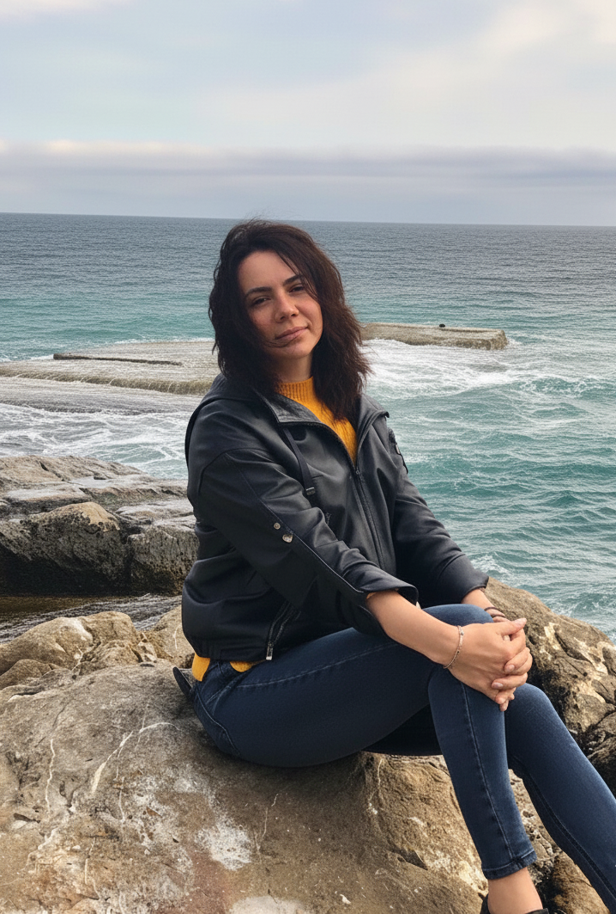
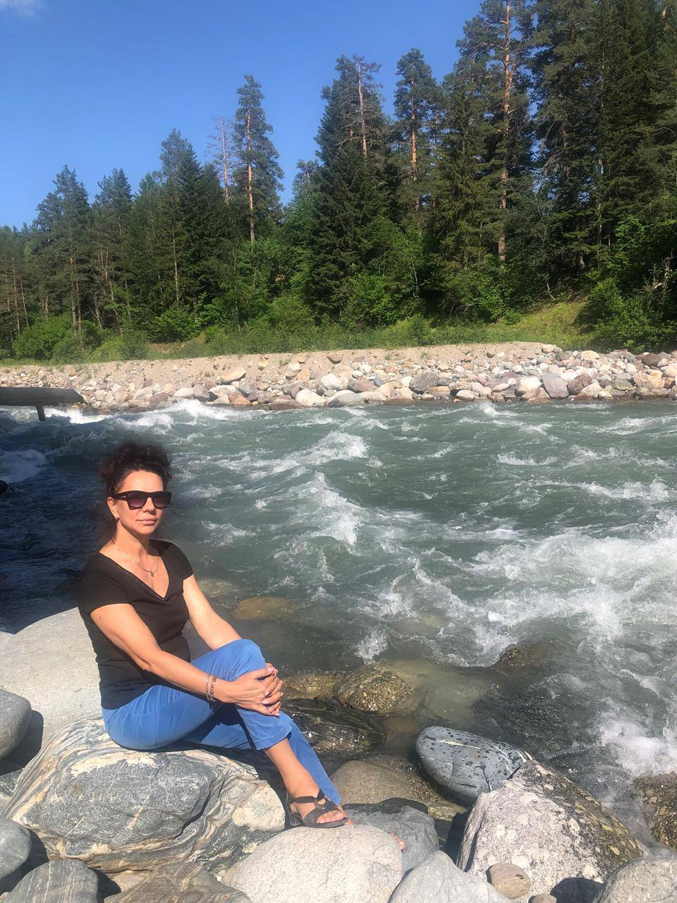
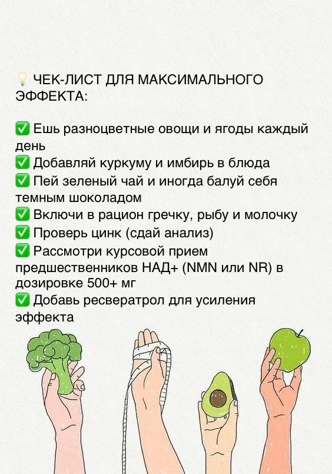
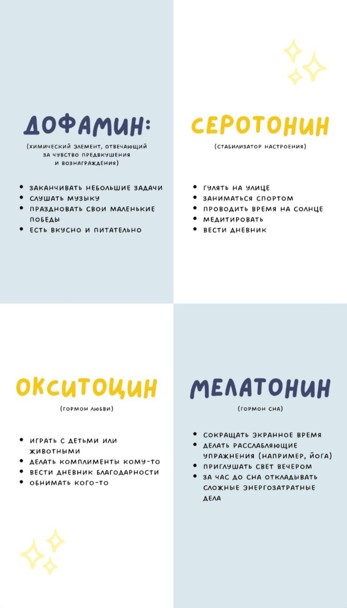
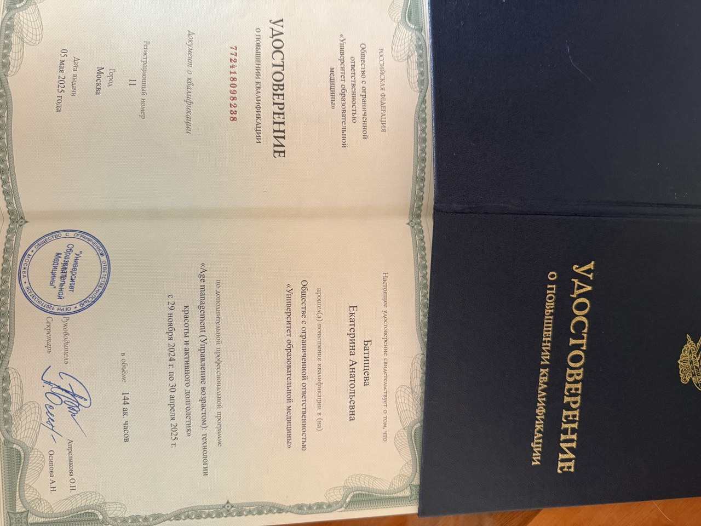
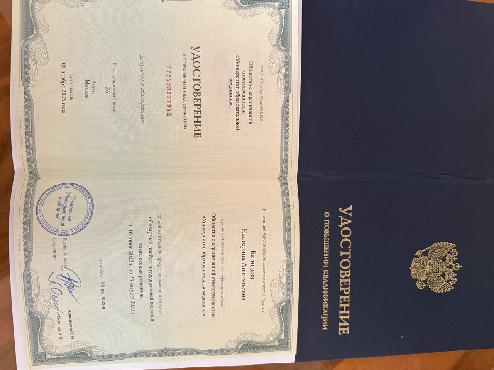
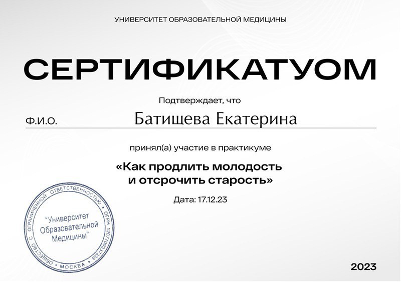
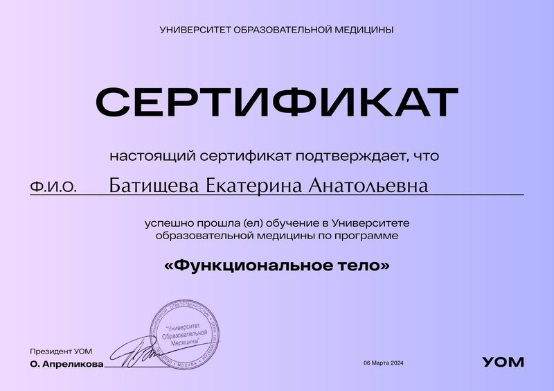

Преддиабет и инсулинорезистентность
Помогаю заметить проблему вовремя, выстроить питание и режим, чтобы поддержать чувствительность к инсулину и снизить риски.
Интегративный нутрициолог
Меня зовут Екатерина Батищева, и я дипломированный провизор. За моими плечами 29 лет работы в фармации.
Долгие годы я ежедневно работала с людьми, с теми, кто столкнулся с болью и болезнью. И чем больше я погружалась в мир лекарств, тем отчетливее понимала горькую правду: таблетки помогают справиться лишь со следствием, в то время как истинная причина продолжает разрушать организм изнутри.
Фармацевтика за эти годы сделала колоссальный скачок вперед. Появились тысячи новых препаратов, полки аптек ломятся от БАДов. Но парадокс в том, что здоровее мы не становимся. Количество болезней не уменьшается, а эпидемия нарушений углеводного обмена бьет все рекорды.
Сегодня я с особой болью и тревогой наблюдаю за ситуацией с инсулинорезистентностью, преддиабетом и диабетом 1 и 2 типа. И самое страшное - это не просто цифры на глюкометре. Это разрушенные сосуды, больные почки, остановки сердца, инсульты и инфаркты, которые настигают даже совсем молодых людей.
Но есть и другая сторона медали. Есть надежда. И я вижу ее каждый день.
Я искренне верю и знаю, что судьбу человека можно изменить. Диабет - это не приговор, который нам выносят врачи. Это состояние, которое можно предотвратить и даже повернуть вспять. Видеть, как человек уходит от опасного диагноза и возвращается к полноценной, здоровой жизни - вот что придает смысл моей работе.
Я здесь для того, чтобы помочь вам найти и устранить причину, а не просто «запихнуть» симптомы очередной таблеткой.
При наличии диагноза работа выстраивается в контакте с лечащим врачом.

С какими запросами
Работа строится вокруг состояний, где питание, образ жизни и восстановление напрямую влияют на самочувствие, показатели анализов и качество жизни.
Помогаю заметить проблему вовремя, выстроить питание и режим, чтобы поддержать чувствительность к инсулину и снизить риски.
Сопровождение по питанию и образу жизни, помощь в создании более стабильного режима, работа в контакте с лечащим врачом.
Работа со связкой факторов: сахар, вес, давление, липиды, уровень энергии, ежедневные привычки и общая нагрузка на организм.
Поиск причин набора веса: рацион, стресс, дефициты, восстановление, пищевое поведение и устойчивость результата.
Питание и образ жизни для энергии, поддержания ресурса, профилактики возрастных изменений и хорошего самочувствия в долгую.
Работа с привычками, которые влияют на уровень энергии, концентрацию, настроение, сон и устойчивость к ежедневной нагрузке.
Telegram-канал
В канале делюсь материалами о питании, метаболизме, здоровом старении, полезных привычках, сне и ресурсе нервной системы.
Пишу о том, как ежедневные привычки, движение, питание и ритм жизни влияют на самочувствие и качество жизни в долгую.

Разбираю питание, микроэлементы, клеточный ресурс, полезные продукты и поддерживающие привычки без крайностей и модных перегибов.

Делюсь наблюдениями о концентрации, стрессе, сне, гормонах радости и повседневных действиях, которые помогают не жить на износ.

Формат работы
От первого запроса до сопровождения: без перегруза, с понятными шагами и опорой на реальную повседневную жизнь.
Короткий бриф по жалобам, целям, рациону и образу жизни. [добавить ссылку на анкету]
Предварительная оценка состояния, факторов риска и точек, с которых лучше начинать работу. [список обязательных анализов уточнить]
Питание, режим, привычки, ориентиры по динамике и понятные шаги без перегруза. [формат документа / чек-листа уточнить]
Корректировки по ходу работы и ответы на вопросы. [срок, частота созвонов, чат и стоимость уточнить]
Образование
Медицинская база и профильное обучение помогают смотреть на состояние шире, чем только через рацион и список продуктов.
Базовое медицинское образование. [точную квалификацию по диплому подтвердить]
Специализация в области нутрициологии и персональной коррекции питания.
«Сахарный диабет: интегративный подход и комплексные решения», 85 акад. часов.
«Управление возрастом: технологии красоты и активного долголетия», 144 акад. часа.
«Как продлить молодость и отсрочить старость» (2023), «Эмоции под контролем: как избавиться от тревожности» (2022), «Функциональное тело» (2024).




Отзывы
Здесь можно разместить короткие истории клиентов и результаты работы после согласования публикации.
[добавить кейс: запрос клиента, что было в начале, какой результат удалось получить]
[добавить отзыв о подходе: как проходила работа, что было особенно полезно]
[добавить измеримый результат: вес, самочувствие, анализы, энергия]
Запись на консультацию
Напишите, если хотите разобраться с питанием, сахаром, весом, энергией, возрастными изменениями или сопровождением по анализам.
{kind=link}
{kind=link}
{kind=link}
{kind=link}